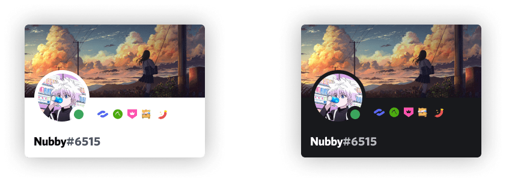

HURT is a Discord server for a group of gamers that play Lord of the Rings: Rise to War. I was tasked to created the brand identity of the group.

1-D: Define
Outlining the task
My task was to create a branding package for the Discord channel such as: a logo, banner, icons, and stickers.
1-D: Define
Keywords to set the tone
To guide me forward I wrote down a few keywords inspired by the words “hurt” and “gaming”.
pain • violence • death
weapon • damage • fighting • poison • toxic
2-D: Design
The style of gaming logos
The gaming industry prefers an emblem or badge logo, which is a design that wraps texts and graphic elements in a stylized, layered and organized manner, such as in a shield or custom shape, to represent the gaming groups or eSports teams.
2-D: Design
Designing the brand identity
The gaming industry prefers an emblem or badge logo, which is a design that wraps texts and graphic elements in a stylized, layered and organized manner, such as in a shield or custom shape, to represent the gaming groups or eSports teams.
For any kind of social media posts and documents a combination of Raleway (for headings) and Lato (for the body type) is to be used.
The colour scheme of the Server Role icons were chosen to contrast well on both light and dark mode.
The server invitations sent by Discord feature the logo and a Grim illustration on top of a brand colour.
3-D: Deliver
Exporting the assets
I exported each asset at the identified during the Define phase and sent them over to the group admins via WeTransfer, and made myself available for redesigns.